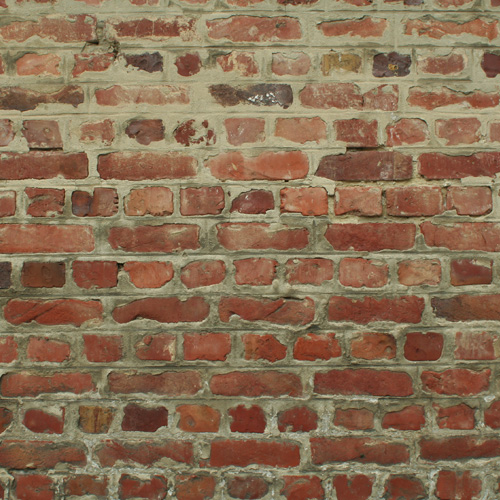

这是[img]标签
在这个视觉文化的时代，没有图像的网页是什么？没趣的图片和图像让一切变得更加有趣和迷人。
下面是最基本的标签：
image标记有几个属性，其中只需要src和alt。其余的是有用的但可选的属性。
这是'src'属性
标签中的source属性告诉我们从何处获取图像。您可以为源提供两种不同类型的URL。
- 网站中图像文件的路径：
（在这种情况下，您的图像存储在与html页面处于同一级别的“images/”目录中）
- 位于Web上其他位置的图像文件的路径：
您应该使用的图像文件格式（即png、jpeg等）的类型不取决于HTML5中的img元素，而是取决于呈现内容的浏览器。浏览器广泛支持png、jpeg、gif和bmp等格式，因此在网站中使用图像时建议使用这些格式。以下是维基百科列出的浏览器及其支持的图像格式的综合列表。
下面列出了使用src属性时要记住的事项：
- 不要在图像路径中包含空格。
- 确保图像路径与实际路径的大小写匹配。Web项目中的图像目录可能是“images/”，但您的路径可能会显示“images/”，缺少“I”中的大写字母。不匹配的资本化可能在某些地方起作用，但并非所有地方都起作用。推荐做法：所有目录、文件名和文件扩展名都使用小写。
- 使用Unix（/）路径名分隔符，而不是Windows（\）样式。这可能在Windows上工作，但在其他地方会失败。路径应为“图像/示例”。png“和非”图像\示例。png'。
- 加载网页时，它总是会查看您在src中为图像指定的位置。确保图像位于正确的位置，否则用户将获得断开的链接。当您使用相对路径时，这一点更为重要—任何与文件“相对”的路径。E、 g.图像/测试。“png”将查找与html页面处于同一级别的“images”目录。因此，您需要确保您的文档根目录不会更改。最简单的方法是始终将图像保持在同一级别，或降低一个级别。
- 不建议使用绝对路径，因为实际上，您是在对整个URL进行硬编码。URL在实际路径之前包含指向它的部分-https://example.com/images/test.png比如协议（https）和域名（example.com）。然而，相对URL以路径-'/图像/测试开始。png'。这里的基本URL来自HTML文档的部署位置。这更容易维护。它可以在localhost上运行，或者在不需要任何更改的情况下切换域名。
图像格式
在您开始在网站中使用图像之前，以下两种资源将帮助您了解最常见的图像文件类型，如jpeg、gif、bmp、tiff和png，它们的优缺点，以及何时使用它们：
在HTML5中使用图像时，需要注意一些与图像格式相关的信息。
- PNG（便携式网络图形）图像支持透明度和alpha通道。这使得它们对于可能需要在页面上覆盖不同背景颜色或其他元素的非矩形图像非常有用。要制作PNG图像，用户需要图形编辑软件（如GIMP、Photoshop或其他）。PNG是W3C Web标准（这是第二版-第一版于1996年发布！）。
- SVG（可缩放矢量图形）以数学方式定义并支持动画。此外，由于它们是在数学上定义的，因此可以缩放到任意大小的徽标可缩放矢量图形（SVG），而不必担心像素、分辨率或图像数据。如果可能的话，这使SVG图像成为一种很好的使用格式。SVG非常适合用于图表、图形、地图、几何形状和基于线条的插图。SVG本身也是一种标记语言，与HTML非常相似。通常，它是用矢量图形软件（如Inkscape、Adobe Illustrator等）创建的，但有些人手工编写标记。请注意，SVG 1.1是W3C Web标准，SVG版本2即将推出。
- 图像数据：大多数图像，尤其是JPEG，包含的数据比浏览器所需的数据多得多，而且往往过大过慢。您可以使用照片编辑软件减小图像大小，该软件允许您重新采样图像以减小其像素数据，进而减小图像大小。但是，重新采样图像后，不要更改其大小（高度和宽度）使其变大，因为它将变得像素化和模糊。
- JPEG（联合摄影专家组）图像压缩效果很好，是照片的标准。但它们不支持任何类型的动画或透明度。
知识检测2.4.1
确保图片正确显示的最佳方法是什么？
alt代表图像的备用文本。
使用此属性，可以提供图像内容的简短描述。此描述应传达有关图像或其在页面中的功能的信息。
alt是一个重要属性，因为对于无法看到图像的用户来说，它是图像的文本替代品，而不是使用依赖alt文本的屏幕阅读器等辅助技术。为搜索引擎提供相关信息也很有用。
“alt”属性的重要性
- 如果将alt添加到图像中，屏幕阅读器通常会宣布存在图像并读取alt属性的内容。
- 如果源属性中的路径错误、internet连接速度慢或图像已重新定位或重命名，则不会显示图像。它将显示断开的链接。有备用文本显示非常有用，这样用户就可以理解丢失的图像。
- 搜索引擎不会“看到”图像。它们依赖alt属性来了解图像的内容。如果在alt中使用目标关键字，它将优化搜索。
- 为了减少数据消耗，一些移动用户关闭了图像。他们需要alt属性来找出图像的内容。
alt也有助于语义-它为图像提供意义，并建议图像内容的用途。
如果图像纯粹用于演示或装饰目的，则应将alt留空- 。辅助技术将忽略此内容。
。辅助技术将忽略此内容。
图像的目的
您可以出于各种原因在网页中使用图像，如：
- 表示提供信息的概念、插图或照片
- 按钮或链接的背景
- 在图像中以文本形式显示报价或消息
- 装饰性图像
根据图像所属的类别，alt文本会有所不同。这本 W3C WAI图像教程是决定图像类别以及学习如何为该类别编写适当的alt文本的极好资源。
以下是使用无效源的郁金香图像示例（“图像”目录中缺少该图像），以及它在Web浏览器中的外观：
知识检测2.4.2
对还是错？“alt”属性的功能之一是向辅助技术和搜索引擎提供有关图像的信息。
标题属性：title
尝试以下操作：将鼠标放在下面的图像上。不要点击，把光标放在上面就行了。
你看到隐藏的信息“伍德伯恩郁金香节的郁金香”了吗？title是一个全局属性，我们以前见过，但值得再次提及，因为它在 标记中非常有用。如果有可能使用工具提示或描述的复杂图像，则需要使用title属性。
标记中非常有用。如果有可能使用工具提示或描述的复杂图像，则需要使用title属性。
alt属性是信息的另一个来源，而title属性应该提供有关图像的其他信息。
注意：对于图像， 必须使用alt属性，因为不能保证title属性会显示给辅助技术用户。重要信息不应依赖title属性，也不应使用title属性代替alt属性。
height和width属性
并非所有图像的大小都适合您的网页。宽度和高度属性可用于以像素为单位调整图像大小，而无需使用外部编辑器。
这是我的原始图像：

显然这页太大了。原始图像尺寸为345x523像素。像素是“图片元素”的缩写。这些小点组成了你在电脑显示器上的图像，比如你在显示器或笔记本电脑上看到的图像。像素通常太小而看不见（除非你看得很近），屏幕可能由数百万像素组成。
现在，如果我想将HTML徽标的大小调整一半：
实际上，您不需要同时定义宽度和高度。您可以只指定高度或宽度，纵横比将被调整。例如，也可以使用以下方法获得上面的图像：
这些属性的使用实际上取决于您如何使用图像。如果它是具有相同大小的多个图像的图像网格或列表的一部分，那么最好通过CSS来实现。因此，您不必费心为每个图像添加相同的尺寸，这将是重复的。此外，将维度直接编码到HTML中通常是不好的做法。
但是，如果要将图像添加到某些内容中，并且它需要具有一定的大小才能满足读者的视觉流，那么最好使用height和width属性将其添加到HTML中。这是为了避免页面中每个图像的样式使CSS混乱。如果您正在更改或删除图像，这也很有用：您可以将其从HTML中删除，而不必记住将其从CSS中删除。
知识检测2.4.3
对还是错？必须始终使用“高度”和“宽度”属性设置图像的大小。
所有图像都应该是HTML内容的一部分吗？
网络上有很大一部分图像没有任何意义。它们仅用于装饰目的，属于演示类别。如何识别这些图像？好吧，如果您没有任何相关的内容可以放在alt属性中，或者如果您觉得它对您或潜在读者不重要，那么它不应该放在HTML中。
我们知道应该在HTML中保持内容和样式的独立。那么，我们如何将这些图像移出内容？好吧，不要在HTML中使用[img]标记添加它们。改用CSS。
此类图像的示例：
- 背景图片
- 横幅图形
- 用作内容背后或周围元素的风景或纹理图片
一些页面（尤其是视频游戏、花式杂志等）有很多吸引眼球的图像，而这些图像并不是页面语义的核心。
你能识别这些类型的装饰图像吗？
从他们的工具提示中找出答案！

知识检测2.4.4
假设您有一个看起来像警告标志的小图像-⚠. 您希望将其放置在网页上特定段落附近。您是应该为警告标志使用图像标记，还是应该通过CSS命令添加它？